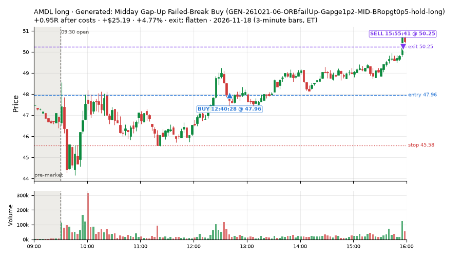
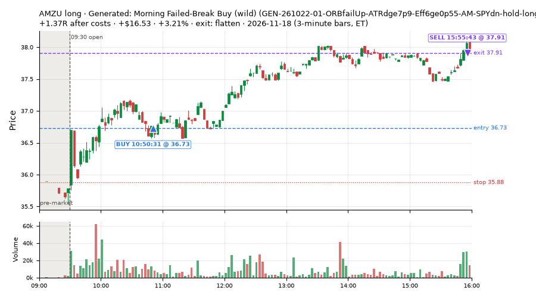
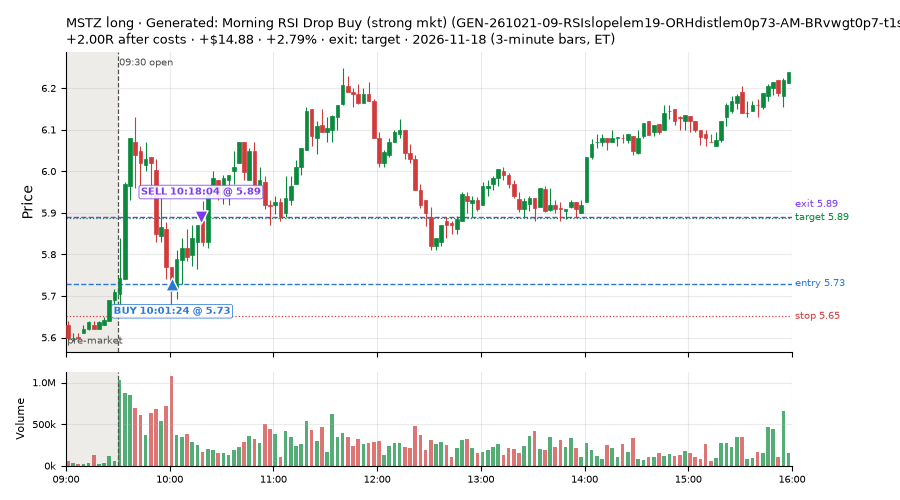
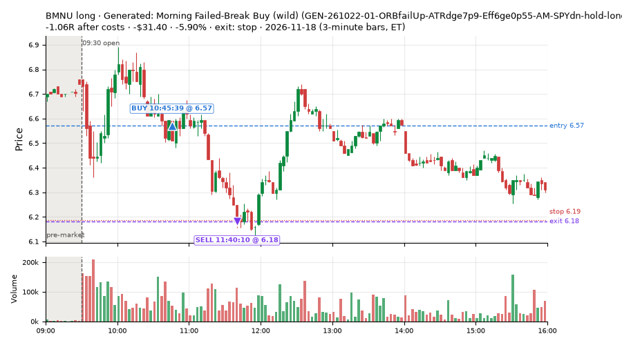
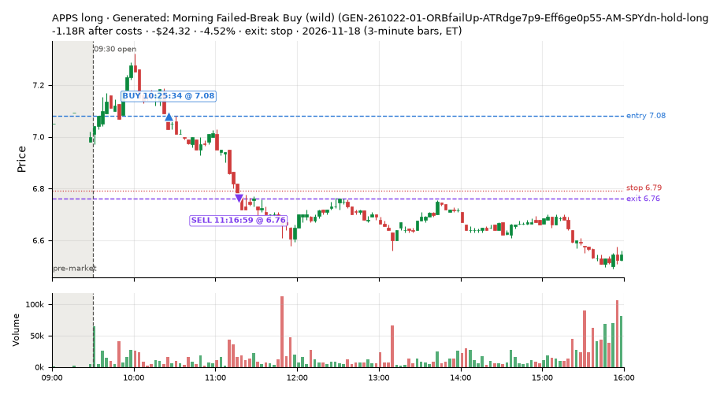
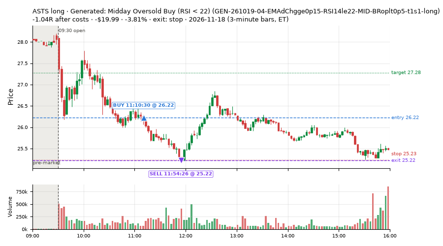
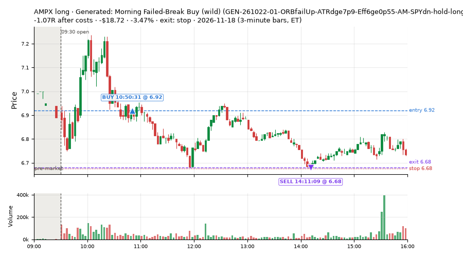
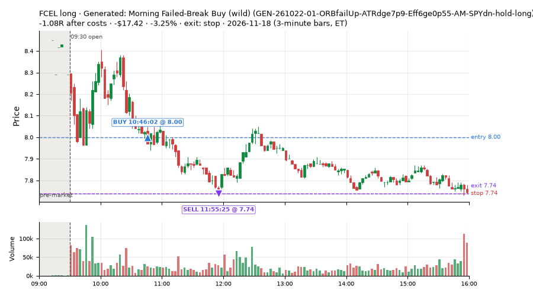

135 trades · win rate 42% · P/L $-213.91
PROBATION: no live setup has passed both locked test periods. 10 owner-directed setups added 2026-10-08 (MarcoFlow top 5 + 5 new), untested live. RW6G1 (RW6 + VWAP band guard) added 2026-10-09, probation.

| Symbol | Setup | Side | In | Out | Entry | Exit | Exit reason | % gained | P/L |
|---|---|---|---|---|---|---|---|---|---|
| AMDL | Generated: Midday Gap-Up Failed-Break Buy (GEN-261021-06-ORBfailUp-Gapge1p2-MID-BRopgt0p5-hold-long) | long | 12:40 | 15:55 | 47.96 | 50.25 | flatten | +4.77% | $25.19 |
| AMZU | Generated: Morning Failed-Break Buy (wild) (GEN-261022-01-ORBfailUp-ATRdge7p9-Eff6ge0p55-AM-SPYdn-hold-long) | long | 10:50 | 15:55 | 36.73 | 37.91 | flatten | +3.21% | $16.53 |
| MSTZ | Generated: Morning RSI Drop Buy (strong mkt) (GEN-261021-09-RSIslopelem19-ORHdistlem0p73-AM-BRvwgt0p7-t1s1-long) | long | 10:01 | 10:18 | 5.73 | 5.89 | target | +2.79% | $14.88 |
| Symbol | Setup | Side | In | Out | Entry | Exit | Exit reason | % lost | P/L |
|---|---|---|---|---|---|---|---|---|---|
| BMNU | GEN-261022-01-ORBfailUp-ATRdge7p9-Eff6ge0p55-AM-SPYdn-hold-long | long | 10:45 | 11:40 | 6.57 | 6.18 | stop | -5.90% | $-31.40 |
| APPS | GEN-261022-01-ORBfailUp-ATRdge7p9-Eff6ge0p55-AM-SPYdn-hold-long | long | 10:25 | 11:16 | 7.08 | 6.76 | stop | -4.52% | $-24.32 |
| ASTS | GEN-261019-04-EMAdChgge0p15-RSI14le22-MID-BRoplt0p5-t1s1-long | long | 11:10 | 11:54 | 26.22 | 25.22 | stop | -3.81% | $-19.99 |
| AMPX | GEN-261022-01-ORBfailUp-ATRdge7p9-Eff6ge0p55-AM-SPYdn-hold-long | long | 10:50 | 14:11 | 6.92 | 6.68 | stop | -3.47% | $-18.72 |
| FCEL | GEN-261022-01-ORBfailUp-ATRdge7p9-Eff6ge0p55-AM-SPYdn-hold-long | long | 10:46 | 11:55 | 8.00 | 7.74 | stop | -3.25% | $-17.42 |








Signal to fill: median 1s, 90th percentile 3s (135 trades). Bars close each minute; the order follows the bar close.
Best excursion (MFE): median 0.65R; worst (MAE) median 0.86R. 19% of trades never got +0.25R in our favour; 6 reached +1R and still closed at or below 0.
| Symbol | Setup | Best R | Worst R | Closed R |
|---|---|---|---|---|
| CIFR | GEN-261022-01-ORBfailUp-ATRdge7p9-Eff6ge0p55-AM-SPYdn-hold-long | +2.53 | -0.19 | +0.46 |
| FROG | GEN-261023-06-RSI7le38-Ret15mge0p54-EMAdiffge0p29-LAM-SPYltm0p25-t1s05-short | +0.69 | -1.56 | -1.34 |
| CIFR | GEN-261021-06-ORBfailUp-Gapge1p2-MID-BRopgt0p5-hold-long | +1.85 | -0.29 | -0.00 |
| MSTR | GEN-261020-01-MACDhge0p12-RSI5le25-PM-BRvwgt0p6-t1s05-long | +0.74 | -1.12 | -1.08 |
| WULF | GEN-261020-01-MACDhge0p12-RSI5le25-PM-BRvwgt0p6-t1s05-long | +0.51 | -1.14 | -1.28 |
| Entry time | Trades | Win | Avg R | P/L |
|---|---|---|---|---|
| 09:50-10:30 | 3 | 33% | -0.08 | $-24.37 |
| 10:30-11:30 | 57 | 46% | +0.01 | $-136.76 |
| 11:30-13:00 | 26 | 46% | +0.07 | $40.46 |
| 13:00-14:00 | 49 | 37% | -0.21 | $-93.25 |
| Setup | Trades | Win | Avg R after costs | Adj R (net of SPY) | Avg R ex-market (all sessions) | P/L |
|---|---|---|---|---|---|---|
| Generated: Midday Oversold Buy (RSI < 22) (GEN-261019-04-EMAdChgge0p15-RSI14le22-MID-BRoplt0p5-t1s1-long) | 7.0 | 57% | +0.12 | +0.03 | +0.13 (beta +1.16, n 119) | $-2.45 |
| Generated: PM Oversold Turn Buy (MACD rising) (GEN-261020-01-MACDhge0p12-RSI5le25-PM-BRvwgt0p6-t1s05-long) | 48.0 | 38% | -0.22 | -0.23 | -0.29 (beta +0.82, n 55) | $-92.70 |
| Generated: Midday Stretched Dip Buy (GEN-261020-09-EMAdChgge0p093-Z12lem0p82-VWAPcrossesle0-MID-QQQltm0p3-holdtr-long) | 15.0 | 27% | -0.38 | -0.40 | +0.26 (beta +1.07, n 189) | $-21.51 |
| Generated: Morning Failed-Breakdown Short (GEN-261020-10-BBpctge0p81-ORBfailDn-AM-BRvwlt0p3-hold-short) | 4.0 | 75% | -0.23 | -0.13 | -0.29 (beta -1.13, n 104) | $-1.13 |
| Generated: Late-AM New-High Short (QQQ down) (GEN-261021-04-NewHOD-PDHdistlem0p65-LAM-QQQltm0p6-hold-short) | 1.0 | 100% | +1.48 | +2.32 | +0.67 (beta -0.61, n 6) | $4.55 |
| Generated: Midday Gap-Up Failed-Break Buy (GEN-261021-06-ORBfailUp-Gapge1p2-MID-BRopgt0p5-hold-long) | 19.0 | 47% | +0.12 | +0.08 | -0.13 (beta +0.43, n 237) | $46.91 |
| Generated: Morning RSI Drop Buy (strong mkt) (GEN-261021-09-RSIslopelem19-ORHdistlem0p73-AM-BRvwgt0p7-t1s1-long) | 1.0 | 100% | +2.00 | +2.07 | -0.37 (beta +2.24, n 11) | $14.88 |
| Generated: Morning Failed-Break Buy (wild) (GEN-261022-01-ORBfailUp-ATRdge7p9-Eff6ge0p55-AM-SPYdn-hold-long) | 38.0 | 42% | -0.34 | -0.36 | -0.12 (beta -0.15, n 161) | $-169.06 |
| Generated: Late-AM Pop Fade (SPY down) (GEN-261023-06-RSI7le38-Ret15mge0p54-EMAdiffge0p29-LAM-SPYltm0p25-t1s05-short) | 2.0 | 50% | +7.65 | +6.87 | +1.14 (beta -1.00, n 10) | $6.60 |
Market direction (SPY, beta 1) accounted for $4.82 of today's $-213.91; the rest ($-218.73) came from the setups themselves. Avg R net of SPY: -0.08 (incl. a hedge leg's cost; report only).
18 setups live today. Today: 198 signals, 135 taken, 2 lost because another setup held the symbol (1%). Since 2026-10-19 (23 sessions): 9623 signals, 4052 taken, 283 lost to other setups (3%). Peak open positions today 104 of 300 slots. Earnings blackout removed 321 symbols before scanning.
Simulated playing time (not live): 5546 what-if trades of signals not taken, avg -0.11R, 44% winners; of them 283 lost to another setup (avg -0.04R).
Silent: GEN-261021-08-RSI2le0-Ret15mATRge0p16-ATRdge3p6-LUNCH-QQQgt0p6-holdtr-long, GEN-POD1022-01-thrasher-breadth-thrust-stocks-holdtr-long
| Prio | Setup | Today sig / taken | Sessions | Signals / taken / trades | Taken/day | Expected/day | Lost to other setups | Lost to (setup n) | Top skip reasons | SIMULATED: not-taken n / avg R / win | Verdict |
|---|---|---|---|---|---|---|---|---|---|---|---|
| 1 | Podcast: Breadth Thrust, Index ETFs (observation) GEN-POD1022-02-breadth-thrust-index-etf-holdtr-long | 0 / 0 | 18 | 4 / 2 / 2 | 0.11 | – | 0 | – | spread / quote / size 2 | 2 / -1.02R / 0% | slow 0.6 entries/week; ~108 weeks to 60 trades |
| 2 | Generated: Late-AM Pop Fade (SPY down) GEN-261023-06-RSI7le38-Ret15mge0p54-EMAdiffge0p29-LAM-SPYltm0p25-t1s05-short | 10 / 2 | 19 | 34 / 10 / 10 | 0.53 | – | 2 | GEN-261022-01-ORBfailUp-ATRdge7p9-Eff6ge0p55-AM-SPYdn-hold-long 2 | not shortable / shorts off 16, spread / quote / size 5, symbol held by another setup 2 | 24 / -0.87R / 8% | slow 2.6 entries/week; ~23 weeks to 60 trades |
| 3 | Generated: Morning RSI Drop Buy (strong mkt) GEN-261021-09-RSIslopelem19-ORHdistlem0p73-AM-BRvwgt0p7-t1s1-long | 1 / 1 | 21 | 22 / 11 / 11 | 0.52 | – | 2 | GEN-261023-03-RSI5le13-VWAPatrlem0p34-OPEN-BRvwgt0p6-holdtr-short 1, GEN-261026-05-Ret15mATRge0p042-FromPCATRge0p28-ORHdistlem0p38-OPEN-BRopgt0p5-hold-short 1, GEN-261029-08-Ret15mlem0p36-Flow3lem0p54-RSI14ge65-AM-SPYgt0p5-hold-short 1 | spread / quote / size 6, broker rejected 3, symbol held by another setup 2 | 11 / +0.67R / 91% | slow 2.6 entries/week; ~23 weeks to 60 trades |
| 4 | Generated: Midday Divergence Short (SPY up) GEN-261020-04-MACDhge0p12-BullDiv-MID-SPYgt0p25-t05s1-short | 0 / 0 | 22 | 79 / 7 / 7 | 0.32 | – | 1 | GEN-261028-05-EMAdChgge0p093-ORLdistlem0p42-LAM-QQQgt0p6-holdtr-long 1 | not shortable / shorts off 48, daily loss cap 20, broker rejected 2 | 72 / +0.06R / 74% | slow 1.6 entries/week; ~38 weeks to 60 trades |
| 5 | Podcast: Bull Flag Breakout or Bailout (observation) GEN-POD1022-03-wt-bull-flag-bailout-S-long | 1 / 0 | 18 | 8 / 3 / 3 | 0.17 | – | 0 | – | spread / quote / size 3, other 2 | 5 / +0.25R / 80% | slow 0.8 entries/week; ~72 weeks to 60 trades |
| 6 | Generated: Late-AM New-High Short (QQQ down) GEN-261021-04-NewHOD-PDHdistlem0p65-LAM-QQQltm0p6-hold-short | 4 / 1 | 21 | 17 / 6 / 6 | 0.29 | – | 0 | – | not shortable / shorts off 6, spread / quote / size 4, broker rejected 1 | 11 / +0.09R / 36% | slow 1.4 entries/week; ~42 weeks to 60 trades |
| 7 | Generated: Morning VWAP-Loss Low Buy (QQQ up) GEN-261028-02-VWAPxDn-NewLOD-AM-QQQgt0p6-t1s1-long | 0 / 0 | 16 | 393 / 131 / 131 | 8.19 | – | 0 | – | spread / quote / size 250, daily loss cap 6, other 3 | 256 / +0.15R / 58% | ok 40.9 entries/week |
| 8 | Generated: PM Oversold Turn Buy (MACD rising) GEN-261020-01-MACDhge0p12-RSI5le25-PM-BRvwgt0p6-t1s05-long | 57 / 48 | 22 | 123 / 55 / 55 | 2.50 | – | 1 | GEN-261029-08-Ret15mlem0p36-Flow3lem0p54-RSI14ge65-AM-SPYgt0p5-hold-short 1 | daily loss cap 33, broker rejected 21, spread / quote / size 11 | 68 / +0.08R / 52% | slow 12.5 entries/week; ~5 weeks to 60 trades |
| 9 | Generated: Morning Failed-Break Buy (wild) GEN-261022-01-ORBfailUp-ATRdge7p9-Eff6ge0p55-AM-SPYdn-hold-long | 66 / 38 | 20 | 294 / 161 / 161 | 8.05 | – | 0 | – | spread / quote / size 117, per-setup cap 15, price through stop/target 1 | 133 / -0.29R / 41% | ok 40.2 entries/week |
| 10 | Generated: Morning Strong-Trend Drop Short GEN-261022-09-Ret15mATRlem0p16-BarRngATRge0p11-ADX7ge64-AM-BRvwlt0p3-hold-short | 0 / 0 | 20 | 426 / 211 / 211 | 10.55 | – | 0 | – | per-setup cap 140, spread / quote / size 55, not shortable / shorts off 14 | 215 / -0.59R / 14% | ok 52.8 entries/week |
| 11 | Generated: Midday Oversold Buy (RSI < 22) GEN-261019-04-EMAdChgge0p15-RSI14le22-MID-BRoplt0p5-t1s1-long | 8 / 7 | 23 | 264 / 119 / 119 | 5.17 | – | 7 | GEN-261022-09-Ret15mATRlem0p16-BarRngATRge0p11-ADX7ge64-AM-BRvwlt0p3-hold-short 7 | spread / quote / size 63, daily loss cap 41, broker rejected 22 | 144 / +0.40R / 69% | ok 25.9 entries/week |
| 12 | Generated: Morning VWAP Reclaim Buy (SPY up) GEN-261021-07-VWAPxUp-ORBfailUp-AM-SPYgt0p5-hold-long | 0 / 0 | 21 | 247 / 143 / 143 | 6.81 | – | 10 | GEN-261029-08-Ret15mlem0p36-Flow3lem0p54-RSI14ge65-AM-SPYgt0p5-hold-short 9, GEN-261022-08-EMAdChglem0p094-Flow3ge1-RVolDayle0p59-AM-SPYgt0p25-holdtr-short 1 | spread / quote / size 62, broker rejected 32, symbol held by another setup 10 | 104 / +0.11R / 44% | ok 34.0 entries/week |
| 13 | Generated: Morning Overbought Drop Short GEN-261029-08-Ret15mlem0p36-Flow3lem0p54-RSI14ge65-AM-SPYgt0p5-hold-short | 0 / 0 | 15 | 300 / 169 / 169 | 11.27 | – | 5 | GEN-261020-07-RSIslopege19-LowWickge0p33-ATRdge4p4-AM-BRvwgt0p7-hold-long 3, GEN-261021-07-VWAPxUp-ORBfailUp-AM-SPYgt0p5-hold-long 2 | spread / quote / size 57, per-setup cap 36, not shortable / shorts off 27 | 130 / -0.47R / 27% | ok 56.3 entries/week |
| 14 | Generated: Morning Failed-Breakdown Short GEN-261020-10-BBpctge0p81-ORBfailDn-AM-BRvwlt0p3-hold-short | 11 / 4 | 22 | 339 / 104 / 104 | 4.73 | – | 0 | – | per-setup cap 120, not shortable / shorts off 65, spread / quote / size 44 | 235 / -0.53R / 23% | ok 23.6 entries/week |
| 15 | Generated: Midday Stretched Dip Buy GEN-261020-09-EMAdChgge0p093-Z12lem0p82-VWAPcrossesle0-MID-QQQltm0p3-holdtr-long | 15 / 15 | 22 | 260 / 189 / 189 | 8.59 | – | 16 | GEN-261022-09-Ret15mATRlem0p16-BarRngATRge0p11-ADX7ge64-AM-BRvwlt0p3-hold-short 16 | spread / quote / size 52, symbol held by another setup 16, other 2 | 71 / +0.53R / 70% | ok 43.0 entries/week |
| 16 | Generated: Open Below-Prior-Low Buy (big bar) GEN-261021-02-BarRngATRge0p14-PDLdistlem0p045-OPEN-SPYgt0p5-t1s1-long | 0 / 0 | 19 | 575 / 243 / 243 | 12.79 | – | 7 | GEN-261023-03-RSI5le13-VWAPatrlem0p34-OPEN-BRvwgt0p6-holdtr-short 5, GEN-261027-07-RSI14le35-FromOpenge2-AM-BRvwlt0p5-t1s1-short 1, GEN-261029-09-RangeExpge1p6-Since950ATRlem0p43-OPEN-BRvwgt0p5-hold-short 1 | per-setup cap 161, spread / quote / size 161, symbol held by another setup 7 | 332 / +0.17R / 63% | ok 63.9 entries/week |
| 17 | Generated: Midday Gap-Up Failed-Break Buy GEN-261021-06-ORBfailUp-Gapge1p2-MID-BRopgt0p5-hold-long | 25 / 19 | 21 | 435 / 237 / 237 | 11.29 | – | 19 | GEN-261022-08-EMAdChglem0p094-Flow3ge1-RVolDayle0p59-AM-SPYgt0p25-holdtr-short 9, GEN-261029-08-Ret15mlem0p36-Flow3lem0p54-RSI14ge65-AM-SPYgt0p5-hold-short 9, GEN-261022-07-Z12lem1p9-FlowShiftlem0p96-ATRdge3p6-AM-BRopgt0p5-t1s1-short 3 | daily loss cap 88, spread / quote / size 42, broker rejected 32 | 198 / -0.01R / 46% | ok 56.4 entries/week |
| 18 | Generated: Late-AM Failed-Breakout Buy GEN-261029-01-ORBfailUp-RSI14le41-ADX7le29-LAM-QQQgt0p3-hold-long | 0 / 0 | 15 | 387 / 121 / 121 | 8.07 | – | 6 | GEN-261029-08-Ret15mlem0p36-Flow3lem0p54-RSI14ge65-AM-SPYgt0p5-hold-short 3, GEN-261022-08-EMAdChglem0p094-Flow3ge1-RVolDayle0p59-AM-SPYgt0p25-holdtr-short 2, GEN-261022-07-Z12lem1p9-FlowShiftlem0p96-ATRdge3p6-AM-BRopgt0p5-t1s1-short 1 | broker rejected 137, daily loss cap 75, spread / quote / size 48 | 266 / -0.21R / 40% | ok 40.3 entries/week |
Every trade is attached as a CSV you can open and edit in Excel or Google Sheets. Live page: https://misiti15.github.io/MCF/live/